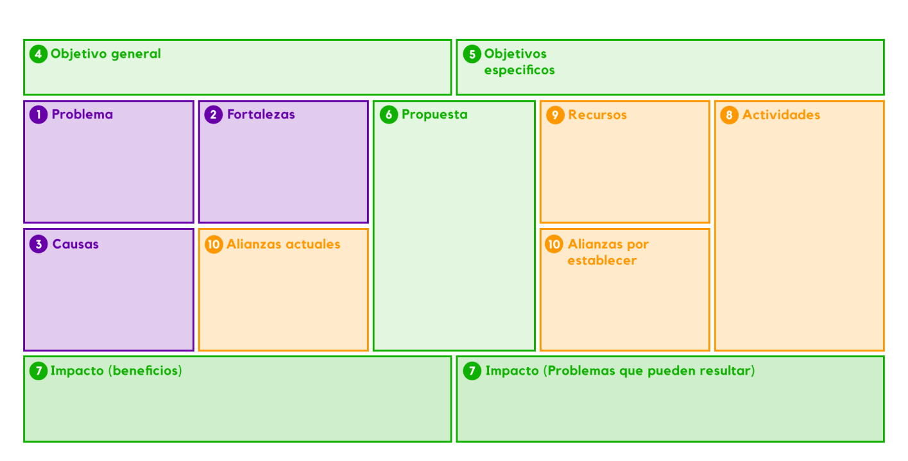

Ruta ASOTOOLS
Esta ruta contiene una serie de metodologías que le permite a las
comunidades idear por sí mismas proyectos colaborativos que beneficien a todos sus miembros.
Las metodologías y actividades que se proponen en esta ruta, abren espacios de oportunidades
a las comunidades, pues motiva a sus miembros a participar activamente en las diferentes fases de
la ideación de un proyecto colaborativo, al permitirles dar sus puntos de vista, identificar problemáticas
que los afectan, plantear objetivos, aportar soluciones e identificar los recursos y aliados necesarios.
La ruta está diseñada con el propósito de fortalecer la participación de los miembros de las comunidades,
pues al desarrollar la ruta, la comunidad trabajaría al rededor de 3 niveles de participación, que van de
lo individual a lo colectivo. Por eso, la ruta toma como base la siguiente teoría:
Nivel interpersonal
Somos parte
Habilidades que trabaja:
- Liderazgo
- Trabajo en equipo
- Creatividad e ideación
- Involucramiento

Al final de todo el proceso de ideación, los resultados obtenidos quedan plasmados en el Canva AsoTools, esta herramienta será como una guía para la comunidad en los siguientes pasos del proceso, en donde ya deben empezar a ejecutar el proyecto.
